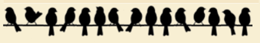
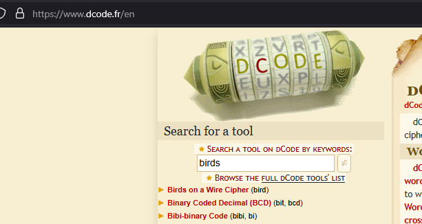
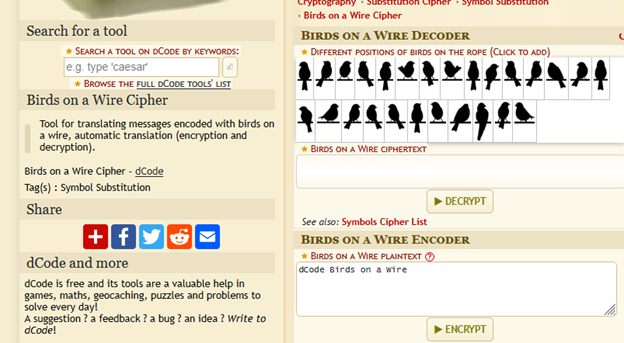
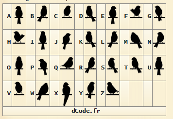
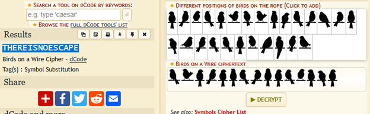
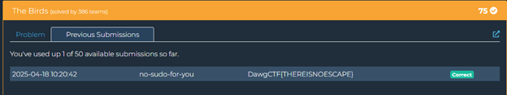

The Birds (CRYPTO)
This was the first real challenge of the competition that I solved. It was a cryptography challenge that included only an image of some birds sitting on a wire. Time to put on my thinking cap!
Step 1: Identify the Cipher
The first thing I did was head to dcode.fr, my go-to site for starting on crypto challenges with ciphers, especially if they have symbols or anything like that and it's not just encrypted data. Searching for "birds" gave a hit right at the top: "Birds on a Wire Cipher". That sounded promising given the image from the challenge.
When I followed the link, I could see that it matched up pretty much exactly with the image from our challenge. Excellent! It turned out to be a symbol substitution cipher, which can be common in CTFs, especially for the lower value challenges since they can be straightforward, even if the cipher is a bit obscure.
Step 2: Decode the Message
The dcode.fr site provided a reference table for manually decoding the cipher, but it also had a handy input box where you can just input the bird sequence you have, and it spits out the deciphered message.
You can either use the table it provides to decode it yourself, or take the easier approach and just input the string (or "wire") into the box using the symbols provided on the site.
Once I input the full wire into the box and decoded it, I got the string "THEREISNOESCAPE". This looked like an English phrase that could be our flag value.
Step 3: Submit the Flag
Following the standard flag format for DawgCTF, I simply wrapped the decoded text in the flag format: DawgCTF{THEREISNOESCAPE}.
And there we have it! The first challenge of the day completed. It's always good to start with the easier challenges because they're a great way to get points and momentum early in the competition. Plus, it's nice to get an early hit of dopamine to drive your monkey brain to perform better!